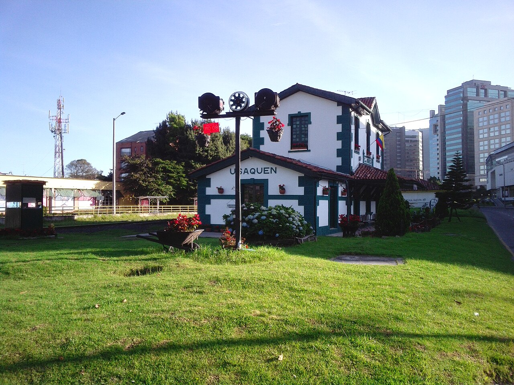

GPMF | Institutional Advisory
Bogotá cuenta con áreas contrastantes. Mientras el Centro Histórico alberga la historia, el distrito de Chapinero la gastronomía, y la Calle 26 sirve como Hub Logístico, el Norte de Bogotá representa la cara más corporativa, moderna y residencial de la ciudad.
Esta guía se enfoca en el distrito de Usaquén y zonas aledañas del Norte. Usaquén conserva una arquitectura de estilo colonial entremezclada con corporativos modernos, plazas con cafés de especialidad, restaurantes gourmet y su famoso mercado de pulgas. Es un sector ideal para negocios que busquen un entorno residencial, seguro y tranquilo, alejado del ritmo acelerado de otras zonas.

Evolución de costos para 2026. Tarifas estimadas en principales hubs corporativos:
| Hotel | Ubicación | Costo Est. | Perfil |
|---|---|---|---|
| W Hotel Bogotá | Usaquén | $200 - $300 USD | Vanguardista, lujo corporativo |
| NH Collection Hacienda Royal | Usaquén | $120 - $180 USD | Corporativo, tradicional, tranquilo |
| Sonesta Hotel | Norte (Unicentro) | $90 - $140 USD | Práctico, corporativo |
Visualice la cercanía entre el distrito corporativo del norte, las calles de Usaquén y los hoteles de la zona:

Restaurantes recomendados para cenas corporativas en un entorno sereno y colonial en Usaquén:

El encanto de Usaquén radica en recorrer sus calles a pie y disfrutar de su tranquilidad:
Acceda a recursos exclusivos y conozca cómo GPMF puede acompañar su estrategia en el mercado LATAM.
Iniciar Diagn�stico Estrat�gico